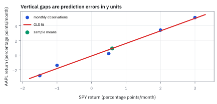
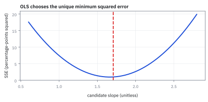
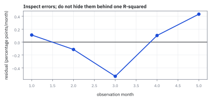
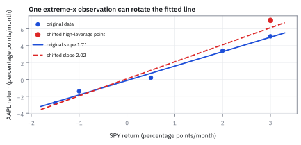

15.1 Ordinary Least Squares (OLS) Regression
เลือกเส้นทำนายที่รับผิดชอบต่อความคลาดเคลื่อนทุกจุด
พอร์ตถือ AAPL \$1,000,000 มีผลตอบแทน 5 เดือนคู่กับ SPY: (2, 3.4), (−1.5, −2.8), (0.5, 0.2), (3, 5.1), (−1, −1.4)% อยาก hedge ความเสี่ยงตลาด ต้อง short SPY กี่ดอลลาร์ และเส้นนี้อธิบายความผันผวนได้กี่เปอร์เซ็นต์?
เฉลย: short SPY มูลค่า \$1,707,483 (จาก slope $\hat b = 1.7075$) และเส้นนี้มี $R^2 = 98.84\%$ อธิบายความผันผวนของ AAPL ได้เกือบทั้งหมด
ศัพท์ที่ใช้ในหัวข้อนี้
- Ordinary Least Squares (OLS)
- วิธีประมาณเส้นตรงที่เลือก coefficients ให้ผลรวม residual squared ต่ำสุด ใช้แยกส่วนที่ตัวแปรอธิบายได้จาก error ที่ยังอธิบายไม่ได้
- regression
- แบบจำลองที่ทำนาย outcome จาก input และ parameters ใช้วัดความสัมพันธ์แบบมีทิศทางภายใต้สมมติฐานที่ระบุ
- residual
- ค่าจริงลบค่าที่ model ทำนายสำหรับ observation หนึ่ง ใช้ตรวจว่าความผิดพลาดมีรูปแบบที่ model พลาดหรือไม่
- intercept
- ค่าทำนายเมื่อ input เป็นศูนย์ ใช้เป็นระดับฐานของ outcome ในสมการเส้นตรง
- slope
- การเปลี่ยนของ outcome ต่อ input เพิ่มหนึ่งหน่วย ใช้สรุป sensitivity ของเส้นที่ประมาณ
- coefficient of determination
- สัดส่วน variance ใน sample ที่ fitted values อธิบายได้ ใช้บรรยาย fit ใน sample แต่ไม่รับรองการทำนายนอก sample
- adjusted R-squared
- สัดส่วน variance ที่ปรับลดทอนด้วยจำนวนตัวแปร ใช้เปรียบเทียบ model ที่มีจำนวนตัวแปรต่างกันเพื่อป้องกันการใส่ตัวแปรเกิน
- sum of squared errors (SSE)
- ผลรวมกำลังสองของ residual ทุกจุด ใช้เป็น objective ที่ OLS ทำให้ต่ำที่สุดและใช้สร้างตัววัดความคลาดเคลื่อน
- covariance
- ค่าเฉลี่ยของผลคูณส่วนเบี่ยงเบนของตัวแปรสองตัว ใช้วัดทิศทางการแกว่งร่วมกันและเป็นตัวเศษของ slope
- variance
- ค่าเฉลี่ยของส่วนเบี่ยงเบนจากค่าเฉลี่ยยกกำลังสอง ใช้วัดการกระจายของตัวแปรอธิบายและเป็นตัวส่วนของ slope
- alpha
- intercept ที่เหลือหลังหักผลของตัวแปรอธิบาย ใช้ตั้งคำถามเรื่องผลตอบแทนส่วนเกิน แต่ยังไม่ใช่หลักฐานเชิงสาเหตุ
- hedge
- position ที่ออกแบบให้ชดเชย exposure ของ position หลัก ใช้ลดความเสี่ยงที่ model วัดได้แต่ยังเหลือ model และ execution risk
- leverage
- อิทธิพลของ observation ที่ค่า input อยู่ไกลจากค่าเฉลี่ยต่อเส้น fitted ใช้ตรวจว่าจุดปลายช่วงกำลังดึง slope มากเกินไปหรือไม่
- volatility
- ความผันผวนของผลตอบแทนใน horizon ที่ระบุ ใช้ตรวจรูปแบบ variance ของ residual และเลือก standard error ที่เหมาะสม
- total sum of squares (SST)
- ความผันผวนทั้งหมดของ $y$ รอบค่าเฉลี่ยตัวเอง ก่อนที่จะมีเส้นอะไรมาช่วยอธิบาย ใช้เป็นตัวตั้งว่าเส้นอธิบายไปได้กี่ส่วน
- regression sum of squares (SSR)
- ส่วนของความผันผวนที่เส้น regression อธิบายได้ คำนวณจาก slope คูณผลรวมผลคูณระยะห่าง เหลือเท่าไรจึงตกไปเป็น SSE
สัญลักษณ์ที่ใช้ในหัวข้อนี้
| สัญลักษณ์ | ความหมาย | หน่วย |
|---|---|---|
| $x_t$ | return ของกองทุน SPY ที่ตามดัชนี S&P 500 ในเดือน $t$ | จุด ต่อเดือน |
| $y_t$ | return ของหุ้น Apple (ticker AAPL) ในเดือน $t$ | จุด ต่อเดือน |
| $\hat a,\hat b$ | intercept และ slope ที่ OLS ประมาณ | จุด ต่อเดือน; unitless ตามลำดับ |
| $\hat y_t$ | ค่าทำนายของ AAPL return | จุด ต่อเดือน |
| $e_t$ | residual ของ observation $t$ | จุด ต่อเดือน |
| $n$ | จำนวน observations | เดือน |
| $\bar x,\bar y$ | sample means ของผลตอบแทนสองชุด | จุด ต่อเดือน |
| $R^2$ | coefficient of determination ใน sample | unitless |
| $\bar R^2$ | adjusted coefficient of determination | unitless |
| $\widehat{\mathrm{SE}}(\hat b)$ | standard error ของ slope estimate | unitless |
| $X, \mathbf{y}$ | design matrix ขนาด $n\times 2$ และ vector ผลตอบแทน | matrix/vector |
ที่มาที่ไป: การหาดาวเคราะห์น้อยที่หายไป
ในปี 1801 นักดาราศาสตร์ค้นพบดาวเคราะห์น้อยชื่อ Ceres แล้วมันหายไปหลังดวงอาทิตย์ เหลือข้อมูลการสังเกตเพียงไม่กี่จุดที่ไม่ตรงกันเลยเพราะความคลาดเคลื่อนของเครื่องมือ
คำถามคือจะลากเส้นโคจรที่ดีที่สุดผ่านจุดที่ขัดแย้งกันเองได้อย่างไร
Adrien-Marie Legendre ตีพิมพ์วิธีกำลังสองน้อยที่สุดในปี 1805 ส่วน Carl Friedrich Gauss ระบุว่าเขาใช้วิธีนี้มาตั้งแต่ปี 1795 ซึ่งกลายเป็นข้อพิพาทที่มีชื่อเสียงในประวัติศาสตร์คณิตศาสตร์
สิ่งที่ทำให้วิธีนี้ชนะวิธีอื่นคือความผันผวนบวกกันได้เมื่อยกกำลังสอง และหาคำตอบได้ด้วยสูตรปิด ซึ่งเป็นเหตุผลเดียวกับที่หัวข้อ 1.4 เลือกยกกำลังสองแทนค่าสัมบูรณ์
Worked Example — โจทย์และสิ่งที่ให้มา
โจทย์ให้อะไรมาบ้าง: ให้ $x_t$ และ $y_t$ เป็น close-to-close returns หนึ่งวัน ไม่ใช่ระดับราคา เพราะเราอยากอธิบายการเปลี่ยนแปลงใน horizon เดียวกัน สร้างเส้นสำหรับ conditional mean แล้วเก็บส่วนที่เส้นพลาดไว้เป็น residual; การตีความเชิงสาเหตุต้องมี design เพิ่มเติม OLS เพียงอธิบายความสัมพันธ์ใน sample
ขั้นที่ 1 — นิยามเส้นและ residual
ก่อนจะเลือกเส้นที่ดีที่สุดได้ ต้องนิยามก่อนว่าเส้นหน้าตาอย่างไร และ 'พลาด' วัดจากอะไร
$\hat y_t$ คือ AAPL return ที่เส้นทำนายหน่วย decimal return ต่อวัน และ $e_t$ คือความผิดพลาดของวันเดียวกันในหน่วยเดียวกัน
ขั้นที่ 2 — นิยามของกติกาที่ OLS เลือกทำให้เล็กที่สุด
บรรทัดนี้เป็น นิยาม ของสิ่งที่เราเลือกจะลด ไม่ใช่ผลที่พิสูจน์ มีหลายวิธีวัดความพลาดรวม เช่นบวกค่าสัมบูรณ์ หรือดูค่าที่แย่ที่สุด เราเลือกยกกำลังสองแล้วบวก ด้วยเหตุผลสองข้อ ข้อแรกกันไม่ให้ความพลาดบวกกับลบหักกันเอง ข้อสองทำให้ความพลาดก้อนใหญ่ถูกลงโทษหนักกว่า และผลพลอยได้คือมันหา derivative ได้ทุกจุด ซึ่งเป็นสิ่งที่ทำให้ขั้นถัดไปแก้ออกมาเป็นสูตรปิดได้
SSE คือผลรวม residual squared หน่วย decimal-return-squared; การยกกำลังสองไม่ให้ error บวกและลบหักล้างกัน และให้ความผิดพลาดใหญ่มีน้ำหนักมากขึ้น
ทำไมต้องยกกำลังสอง ทำไมไม่ใช่ขนาดของความคลาดเคลื่อน
นี่คือเหตุผลที่บล็อกประวัติข้างบนเล่าเรื่อง Gauss กับดาวเคราะห์น้อยที่หายไป เขาไม่ได้เลือกกำลังสองเพราะคำนวณง่าย เขาถามกลับด้านว่าความคลาดเคลื่อนต้องแจกแจงแบบไหน กติกากำลังสองถึงจะเป็นคำตอบที่ดีที่สุด แล้วคำตอบนั้นคือระฆังคว่ำ ซึ่งทุกวันนี้เรียกกันว่า Gaussian ตามชื่อเขา
ผลที่ตามมาในงานจริง กำลังสองลงโทษค่าที่หลุดไปไกลแรงมาก ข้อมูลผิดตัวเดียว ดึงเส้นทั้งเส้นได้ ถ้าข้อมูลมีหางหนาหรือมีค่าผิดปกติ การใช้ขนาดแทนกำลังสอง จะได้เส้นที่ทนกว่า แลกกับการที่ไม่มีสูตรปิดให้กด
เหตุผลข้อแรกเป็นเรื่องเครื่องมือล้วน ๆ กำลังสองหา derivative ได้ทุกจุด พอตั้งให้เท่าศูนย์จะได้สมการเชิงเส้นที่แก้ได้ตรง ๆ มีคำตอบเดียว ส่วนขนาดของความคลาดเคลื่อนมีมุมแหลมตรงศูนย์ ตรงนั้นหาความชันไม่ได้
ข้อสองลึกกว่า และเป็นข้อที่คนมักไม่รู้ สองกติกานี้ไม่ได้ตอบคำถามเดียวกัน กำลังสองพาไปหาค่าเฉลี่ย ส่วนขนาดพาไปหา median เลือกกติกาคือเลือกว่าจะทำนายอะไร
ข้อสามคือจุดที่ทุกอย่างมาบรรจบ ถ้าเชื่อว่าความคลาดเคลื่อนเป็นระฆังคว่ำ ความน่าจะเป็นของข้อมูลทั้งชุดมีเลขชี้กำลังเป็นผลบวกของกำลังสอง
พอใส่ logarithm เข้าไป ผลคูณกลายเป็นผลบวก และการทำให้ความน่าจะเป็นมากที่สุด กลายเป็นการทำให้ผลบวกของกำลังสองน้อยที่สุดพอดี กติกาจึงไม่ได้ถูกเลือก มันถูกบังคับโดยข้อสมมติเรื่องรูปร่างของความคลาดเคลื่อน
ขั้นที่ 3 — แก้ normal equations ทีละ coefficient
หาจุดที่ความพลาดรวมต่ำที่สุดด้วยการให้ความชันเป็นศูนย์ สูตรข้างล่างแสดงว่าสองสูตรที่ใช้กันทุกวัน มาจากการหา derivative สองครั้งแล้วแก้สมการ และรูปของคำตอบก็คือ covariance หารด้วย variance ซึ่งเป็นตัวเดียวกับ hedge ratio ในหัวข้อ 7.4
ความพลาดรวมเป็นชามโค้งขึ้น จุดต่ำสุดจึงอยู่ที่พื้นราบ หา derivative เทียบระดับของเส้นแล้วตั้งเป็นศูนย์ สิ่งที่ได้อ่านความหมายได้ทันที ผลรวมของความพลาดต้องเป็นศูนย์ แปลว่าเส้นต้องผ่านจุดค่าเฉลี่ยพอดี
ทำอย่างเดียวกันกับความชัน แล้วแทนผลข้างบนลงไป ทุกอย่างจึงอยู่ในรูประยะห่างจากค่าเฉลี่ย ซึ่งเป็นรูปที่อ่านง่ายที่สุด ย้ายพจน์ที่มีความชันไปฝั่งเดียวแล้วหาร
อ่านผลสุดท้าย ตัวเศษคือ covariance และตัวส่วนคือ variance ของตัวทำนาย จึงเขียนเป็น correlation คูณอัตราส่วนความผันผวนได้ ตรงกับสูตร conditional expectation ในหัวข้อ 7.4 เป๊ะ ๆ
ขั้นที่ 4 — ตัวอย่างหุ้นสหรัฐฯ ห้าเดือนที่ตรวจเลขได้
ห้าเดือน จับคู่เดือนต่อเดือน ตัวเลขทุกตัวหลังจากนี้คำนวณจากสิบตัวนี้เท่านั้น ไม่มีค่าอื่นแอบเข้ามา
ให้ $x$ เป็น SPY และ $y$ เป็น AAPL; ทั้งคู่ใช้ จุด ต่อเดือนและจับคู่ด้วยเดือนเดียวกันก่อนคำนวณ
ขั้นที่ 5 — หาค่าเฉลี่ยของสองชุดก่อน
ทุกอย่างในสูตร slope วัดจากค่าเฉลี่ย จึงต้องได้ค่าเฉลี่ยของทั้งสองชุดมาก่อน
บวก $x$ ทั้งห้าเดือนได้ 3.0 หารด้วย 5 ได้ 0.60 และบวก $y$ ทั้งห้าเดือนได้ 4.5 หารด้วย 5 ได้ 0.90 ทั้งคู่มีหน่วยเป็น จุด ต่อเดือน
ตารางคำนวณ: กางทีละเดือนก่อนจะรวม
| เดือน $t$ | $x_t$ | $y_t$ | $x_t-\bar x$ | $y_t-\bar y$ | $(x_t-\bar x)(y_t-\bar y)$ | $(x_t-\bar x)^2$ | $(y_t-\bar y)^2$ |
|---|---|---|---|---|---|---|---|
| 1 | 2.0 | 3.4 | 1.4 | 2.5 | 3.50 | 1.96 | 6.25 |
| 2 | −1.5 | −2.8 | −2.1 | −3.7 | 7.77 | 4.41 | 13.69 |
| 3 | 0.5 | 0.2 | −0.1 | −0.7 | 0.07 | 0.01 | 0.49 |
| 4 | 3.0 | 5.1 | 2.4 | 4.2 | 10.08 | 5.76 | 17.64 |
| 5 | −1.0 | −1.4 | −1.6 | −2.3 | 3.68 | 2.56 | 5.29 |
| รวม | 3.0 | 4.5 | 0.0 | 0.0 | 25.10 | 14.70 | 43.36 |
สองคอลัมน์กลางคือระยะห่างจากค่าเฉลี่ยของแต่ละเดือน สามคอลัมน์ขวาคือผลคูณและกำลังสองของระยะนั้น แถวล่างสุดคือผลรวมของคอลัมน์ ซึ่งคือตัวเลขสามตัวที่สูตร OLS ต้องการพอดี สังเกตว่าคอลัมน์ระยะห่างรวมกันได้ศูนย์ทั้งสองคอลัมน์ นั่นคือวิธีเช็กว่าค่าเฉลี่ยถูก
ขั้นที่ 6 — รวมคอลัมน์ ได้สามตัวเลขที่สูตรต้องใช้
บวกตามคอลัมน์ในตารางตรง ๆ ไม่มีอะไรมากกว่านั้น
$S_{xy}$ คือผลรวมของผลคูณระยะห่าง $S_{xx}$ คือผลรวมกำลังสองฝั่ง $x$ และ $S_{yy}$ คือผลรวมกำลังสองฝั่ง $y$ ซึ่งจะได้ใช้ตอนหา $R^2$
ขั้นที่ 7 — หา slope แล้วค่อยหา intercept
slope มาจากสองผลรวมแรก ส่วน intercept บังคับให้เส้นผ่านจุดค่าเฉลี่ยพอดี
หน่วย percentage-points-squared ตัดกันใน slope จึงเหลือเป็นตัวเลขล้วน ส่วน intercept ยังมีหน่วย จุด ต่อเดือน
ขั้นที่ 8 — เส้นพลาดไปเท่าไร: SSE จาก SST
$S_{yy}$ คือความผันผวนทั้งหมดของ $y$ ก่อนมีเส้น ส่วนที่เส้นอธิบายได้คือ $\hat b$ คูณ $S_{xy}$ ที่เหลือคือส่วนที่เส้นอธิบายไม่ได้
ความผันผวนทั้งหมด 43.36 ถูกเส้นอธิบายไป 42.8578 เหลือเป็นความผิดพลาด 0.5022 ทั้งสามตัวมีหน่วยเป็น percentage-points-squared
ทำไม SSR เท่ากับ $\hat b\,S_{xy}$: ค่าทำนายห่างจากค่าเฉลี่ย $\hat y_t-\bar y=\hat b(x_t-\bar x)$ ยกกำลังสองแล้วบวกได้ $\hat b^2S_{xx}$ และเพราะ $\hat b=S_{xy}/S_{xx}$ จึงเท่ากับ $\hat b\,S_{xy}$ ตัวเลข: $1.7075^2\times14.70=42.86$ เท่ากัน
ขั้นที่ 9 — ตรวจ SSE ด้วยการคำนวณ residual ทีละเดือน
ทางลัด SST − SSR ให้ SSE แต่วิธีตรง ๆ คือคำนวณค่าทำนายทั้งห้าเดือน ลบของจริง ยกกำลังสอง แล้วบวก ทำเองสักครั้งจะได้เห็นว่าเดือนไหนพลาดมาก
ค่าทำนายแต่ละเดือนคือ intercept บวก slope คูณ SPY ของเดือนนั้น residual คือของจริงลบค่าทำนาย ยกกำลังสองแล้วบวก ได้ 0.5022 ตรงกับทางลัดในขั้นก่อน
สองสิ่งที่ต้องเป็นจริงเสมอสำหรับเส้น OLS ที่มี intercept: residual รวมกันเป็นศูนย์ (เส้นผ่านจุดค่าเฉลี่ย) และ residual คูณ $x$ รวมกันเป็นศูนย์ ถ้าคำนวณแล้วไม่ได้ศูนย์ แปลว่าคำนวณผิด นี่คือเครื่องมือตรวจก่อนเชื่อตัวเลขใด ๆ
เดือนที่ 3 พลาดมากที่สุด (−0.53) และกินไป 0.28 จาก 0.50 ของ SSE ทั้งหมด ยกกำลังสองทำให้จุดที่พลาดมากมีน้ำหนักมาก ซึ่งเป็นทั้งข้อดีและข้อควรระวังของวิธีนี้
ขั้นที่ 10 — แปลง SSE เป็นความไม่แน่นอนของ slope
หาร SSE ด้วย degrees of freedom ก่อน แล้วถอดราก จึงได้ขนาดความผิดพลาดต่อเดือน จากนั้นจึงเทียบกับความกว้างของ $x$
degrees of freedom คือ 5 จุดลบ 2 ตัวที่เราประมาณ เหลือ 3 ได้ค่าความผิดพลาดต่อเดือน $s_e = 0.4091$ จุด ต่อเดือน
standard error ของ slope ได้ 0.1067 มาจาก variance ของ residual เทียบกับความกว้าง $S_{xx}$
t-statistic เท่ากับ 16.00 แปลว่า slope ห่างจากศูนย์ถึง 16 standard errors ชี้ว่าความชันมีนัยสำคัญสูงมากใน sample 5 จุดนี้
ขั้นที่ 11 — สัดส่วน variance ที่อธิบายได้และ Adjusted R²
คำนวณ $R^2$ จากสัดส่วน variance พร้อมทั้งลงโทษการเพิ่มตัวแปรด้วย adjusted $R^2$
$R^2$ เท่ากับ 0.9884 แปลว่าเส้น OLS อธิบาย variance ของ AAPL ได้ถึง 98.84% ในกลุ่มตัวอย่าง
ในกรณีตัวแปรเดี่ยว $R^2$ มีค่าเท่ากับ correlation ยกกำลังสอง $\rho_{xy}^2$ เสมอ
adjusted $R^2$ คำนวณได้ 0.9846 โดยปรับลดลงเล็กน้อยตามสัดส่วน degrees of freedom ที่เหลือ
ขั้นที่ 12 — แก้ normal equations ในรูป matrix
เขียนสมการ OLS ในรูป vector และ matrix เพื่อรองรับกรณีที่มีตัวแปรอธิบายหลายตัว
matrix $X$ มีคอลัมน์แรกเป็น 1 สำหรับ intercept และคอลัมน์สองเป็นผลตอบแทน SPY
matrix $X^\top X$ ขนาด 2×2 มี determinant เท่ากับ 73.5 จึงหา inverse ได้แน่นอน
ผลลัพธ์ vector $\hat{\boldsymbol\beta}$ ให้ intercept −0.1245 และ slope 1.7075 เท่ากับสูตร scalar ทุกประการ
แล้วเอาไปใช้ทำอะไรได้จริงบ้าง
การหาเส้นที่อธิบายข้อมูลได้ดีที่สุด เป็นเครื่องมือที่ใช้บ่อยที่สุดในงานเชิงปริมาณ
ใช้วัดว่าหุ้นตัวหนึ่งเกาะตลาดแรงแค่ไหน ซึ่งเป็นตัวเลขที่ใช้คำนวณขนาด hedge
ใช้หาความสัมพันธ์ระหว่างสัญญาณกับผลตอบแทนในอนาคต ซึ่งเป็นก้าวแรกของการสร้างกลยุทธ์
ใช้แยกผลตอบแทนออกเป็นส่วนที่อธิบายได้กับส่วนที่เหลือ ซึ่งส่วนที่เหลือคือสิ่งที่เราสนใจ
Figure 15.1a — OLS fit และ residuals

จุดห้าเดือนเป็นข้อมูลสังเคราะห์ของ SPY และ AAPL เพื่อสอนการคำนวณ เส้น OLS ผ่านจุดค่าเฉลี่ย และเส้นประแนวตั้งคือ residual ที่ถูกยกกำลังสองก่อนรวม
Figure 15.1b — ทำไม square จึงเลือกเส้นต่างกัน

เมื่อเลื่อน slope ออกจากค่าประมาณ 1.7075 ค่า SSE สูงขึ้นทั้งสองด้าน จุดต่ำสุดเพียงจุดเดียวเกิดจากข้อมูล $x$ มี variance ไม่ใช่เพราะ software มีรสนิยม
Figure 15.1c — ตรวจ residual

residual ในตัวอย่างสลับบวกและลบรอบศูนย์ แต่ห้าเดือนน้อยเกินไปจะประกาศว่า error เป็นอิสระหรือคงที่ได้ กราฟนี้คือคำถามตรวจ model ไม่ใช่คำตอบ
Figure 15.1d — leverage ของข้อมูลปลายช่วง

จุดที่ค่า SPY อยู่ไกลจากค่าเฉลี่ยมี leverage สูงและดึง slope ได้มากกว่า ภาพเปรียบเทียบ slope เดิมกับกรณีขยับ observation ปลายช่วงเพียงจุดเดียว จึงเตือนให้ตรวจ outlier ก่อนใช้ hedge ratio
สมมติฐานที่ต้องติดไปกับ coefficient
การอนุมานมาตรฐานต้องการความสัมพันธ์เชิงเส้น, ค่าเฉลี่ย error เป็นศูนย์เมื่อกำหนด $x_t$, ไม่มี perfect collinearity และรูปแบบ variance กับการพึ่งพาตามเวลาถูกจัดการเหมาะสม หาก residual มี volatility clustering หรือ autocorrelation ให้ใช้ robust standard errors หรือ model เวลาโดยตรง; coefficient เดิมอาจยังคำนวณได้ แต่ confidence interval แบบพื้นฐานไม่น่าเชื่อถือ
คำตอบ ตรวจเอง และแปลว่าอะไร
คำถาม: พอร์ตถือ AAPL \$1,000,000 อยาก hedge ความเสี่ยงตลาดด้วย SPY ต้อง short กี่ดอลลาร์ และเส้น OLS อธิบายความผันผวนได้กี่เปอร์เซ็นต์
ของที่มี (ขั้นที่ 1 ถึง 12): ผลตอบแทน 5 เดือนคู่กัน ได้ slope 1.7075, intercept −0.1245 จุด ต่อเดือน, R² เท่ากับ 0.9884 และ adjusted R² เท่ากับ 0.9846
คำตอบ: (1) short SPY มูลค่า \$1,707,483 เพื่อชดเชย market risk (2) เส้น OLS อธิบายความผันผวนของ AAPL ได้ 98.84% (หรือ 98.46% เมื่อปรับลดทอนด้วย degrees of freedom)
ตรวจเองใน 10 วินาที: \$1,707,483 หาร \$1,000,000 ได้ 1.7075 เท่ากับ slope พอดี; และ correlation กำลังสองเท่ากับ 0.9884 ตรงกับ R²
แปลว่าอะไรบนโต๊ะเทรด: แม้ R² จะสูงถึง 98.84% แต่ข้อมูลมีเพียง 5 เดือน (n = 5) ซึ่งเหลือ degrees of freedom แค่ 3 จุด ตัวเลขนี้จึงใช้ฝึกคำนวณเท่านั้น ในการเทรดจริงต้องใช้ข้อมูลอย่างน้อย 1-2 ปี ตรวจสอบ residual และระวัง regime shift
โค้ดตรวจเลขและ invariant
import numpy as np
x = np.array([2.0, -1.5, 0.5, 3.0, -1.0])
y = np.array([3.4, -2.8, 0.2, 5.1, -1.4])
b = ((x - x.mean()) * (y - y.mean())).sum() / ((x - x.mean())**2).sum()
a = y.mean() - b * x.mean()
e = y - (a + b * x)
sse = e @ e
sst = ((y - y.mean()) @ (y - y.mean()))
r2 = 1 - sse / sst
adj_r2 = 1 - (1 - r2) * (len(x) - 1) / (len(x) - 1 - 1)
X = np.column_stack([np.ones(len(x)), x])
beta = np.linalg.inv(X.T @ X) @ X.T @ y
assert abs(b - 1.7074829932) < 1e-9
assert abs(a + 0.1244897959) < 1e-9
assert abs(sse - 0.5021768707) < 1e-9
assert abs(r2 - 0.9884184301) < 1e-9
assert abs(adj_r2 - 0.9845579068) < 1e-9
assert np.allclose(beta, [a, b])โค้ดนี้ตรวจ slope, intercept, SSE, $R^2$, adjusted $R^2$ และ matrix form ยืนยันว่าทุกค่าตรงกับสมการ
ก่อนไปต่อ — แบบจำลองตลาด
เมื่อเปลี่ยน $x_t$ จากตัวแปรทั่วไปเป็น market excess return slope จะวัด sensitivity ต่อตลาดและ intercept จะวัดส่วนที่ตลาดอธิบายไม่หมด หัวข้อถัดไปจึงไม่ได้เปลี่ยนเครื่องมือ แต่เพิ่ม economic assumptions เพื่อแปล regression เป็น required return และ hedge exposure
กับดัก: ใช้ระดับราคาและเรียก fit ว่า signal
ราคาที่มี trend สองเส้นอาจให้ $R^2$ สูงแม้ไม่มี tradeable relation ใช้ผลตอบแทนหรือ series ที่ทำให้ stationary ตามคำถาม และกันเวลาเรียงลำดับไว้สำหรับ test; OLS ไม่ซ่อมข้อมูลที่ถามผิด
ข้อจำกัด: วิธีนี้สมมติอะไร และของจริงเป็นอย่างไร
| เรื่อง | วิธีนี้สมมติว่า | ของจริงเป็นอย่างไร | ผลที่ตามมาเวลาใช้งาน |
|---|---|---|---|
| ความสัมพันธ์เชิงสาเหตุ | เส้นที่ได้บอกความสัมพันธ์ | ไม่ได้บอกว่าอะไรทำให้อะไรเกิด | การใช้ผลนี้ตัดสินใจโดยคิดว่าเป็นเหตุเป็นผลกันเป็นความผิดพลาดที่แพงที่สุด |
| ความคงที่ | ความสัมพันธ์คงที่ | มันเปลี่ยนตามภาวะตลาด | ค่าที่ประมาณจากปีที่แล้วอาจใช้กับปีนี้ไม่ได้ |
| ค่าผิดปกติ | ทุกจุดมีน้ำหนักเท่ากัน | การยกกำลังสองทำให้จุดสุดโต่งมีอิทธิพลมาก | วันวิกฤติไม่กี่วันลากเส้นทั้งเส้นได้ |
แถวแรกเป็นบทเรียนที่ต้องท่องให้ขึ้นใจ และหัวข้อ 15.5 จะแสดงว่ามันผิดพลาดได้ง่ายแค่ไหน
สรุปที่ใช้ได้จริง
- OLS ลด SSE ของ residual แนวตั้งในการทำนาย $y$ จาก $x$
- ต้องอ่าน $\hat b$ พร้อม horizon และหน่วยของ returns
- fit ใน sample ไม่พิสูจน์ causality หรือ predictive alpha
- ตรวจ residuals และ timestamp alignment ก่อนนำ coefficient ไปใช้
- OLS ยกกำลังสองด้วยเหตุผลสามชั้น: หา derivative ได้จึงมีสูตรปิด, ทำให้ได้ conditional mean (ไม่ใช่ median), และภายใต้ความคลาดเคลื่อนแบบระฆังคว่ำ มันคือ maximum likelihood พอดี